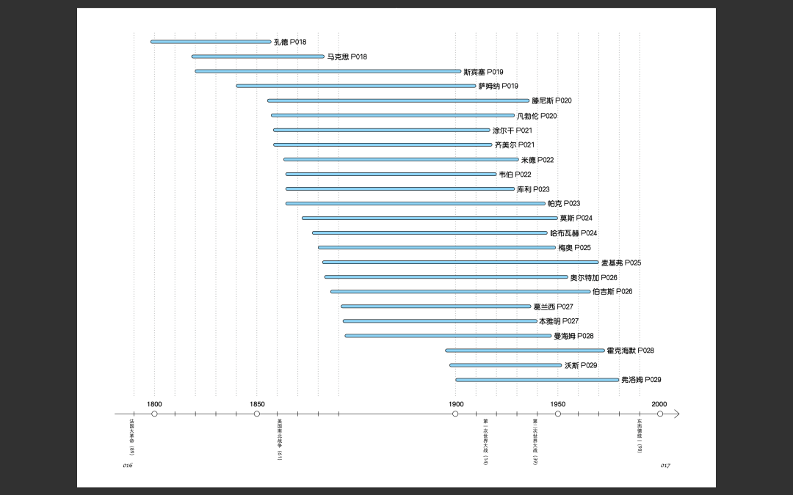
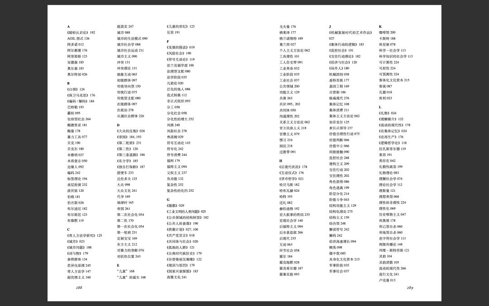
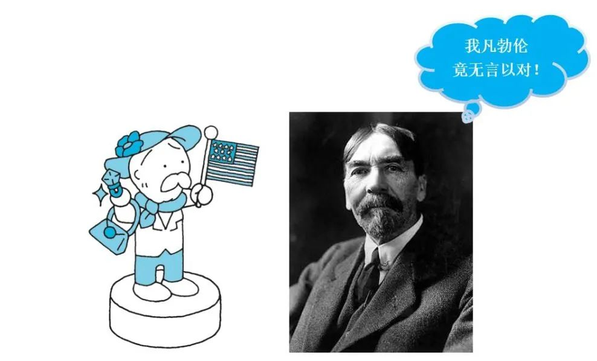

收录于合集 #政观书讯 16个
如果有人问你，“社会学是研究什么的？”你是否会感到一头雾水？
对于大多数人来说，“社会学”这个词既熟悉又陌生。我们不时在公共讨论中看到某些理论的身影，或者在热门文章中偶遇一两个概念和人名。但是要问它究竟是研究什么的，好像又说不清楚。
那么，让我们换个问法：在电梯里遇到认识的人时，你是否常常装作没有注意到对方，低头玩手机呢？
如果你的答案是肯定的，那么恭喜你，你就是社会学研究的对象！
不过，你知道自己为什么会这么做吗？
美国社会学家 欧文·戈夫曼 是这样解释的：
处在拥挤的电梯等令人感到不自然的情况下时，我们往往会假装对周围的人毫不在意，以此维持场面的平静，这就是所谓的 “礼貌性疏忽” 。
戈夫曼认为，社会是一个大舞台，人像演员一样在其中表演。 所以，如果以后再有人说你是戏精，别忙着回怼——他们可能是戈夫曼的正统传人。
即使你没有听说过戈夫曼和他的“戏精理论”，相信你也一定听过 马克思、韦伯、维特根斯坦、福柯、波伏娃 这些如雷贯耳的大名， 异化、祛魅、规训、第二性、女权主义 之类的文科黑话，你肯定也不止一次在网上刷到过。这些人名和概念，就是组成社会学这门神秘学科的基石。
你瞧，其实你对社会学并非一无所知。事实上，社会学是一门非常接地气的学问，与每个人的日常生活都息息相关。 退一万步讲，就算你对它不够了解，它对你也是了如指掌哦。
是不是有些不甘心呢？没关系，现在摆在你面前的就是一条接近它的绝赞路径：
锵锵！翻开这本超萌的 《惊呆了！原来这就是社会学》，用读漫画的方式，只要3分钟， 就能认识一位个性十足（点错技能树）的社会思想家，了解一种鲜活实用（让人躺枪）的社会学思想。
已知：本书用400幅漫画介绍了76位社会学巨擘、135个社会学核心概念。
求解：从拿起这本书到放下需要多少秒？
答： 根本放不下！
名师推荐
研读社会学经典，关键在于将高度抽象的理论表述与自己的日常生活体验结合起来。本书通过有趣的漫画将晦涩的理论形象化，大大降低了社会学的入门难度，即使是研习社会学多年的人，也能有所收获。我在拿到书之前并没有太高的期望，但从翻开第一页起就爱不释手，花了两个晚上心情愉悦地读完，一些此前半懂不懂的概念和理论也变得亲切起来。
——李钧鹏，华中师范大学社会学院教授
很多初次接触社会学的探索者，都很好奇社会学是什么、社会学有用吗、社会学会很难懂吗。其实社会学也可以很可爱。通过本书一幅幅通俗易懂的绘画图解，我们看到社会学从古典到现代的发展脉络，看到各个思想名家的经典社会学概念，以及这些概念的应用场景，让我们在莞尔一笑中，理解我们纷繁复杂的社会。我们只有理解社会，才可以更好地通过反身性的思考理解我们自己。
——严飞，清华大学社会学系副教授《穿透：像社会学家一样思考》作者
作者介绍
田中正人
1970年出生，毕业于伦敦艺术大学伦敦传媒学院，于MORNING GARDEN公司从事平面设计，并担任图书策划和制作。
香月孝史
1980年出生，东京大学跨学科信息研究院博士，专攻文化社会学，从事以流行文化为主题的写作和批评。
内容简介
从现代到当代，面向未来，社会学关键人物及其核心理念一目了然
上至学科奠基人奥古斯特·孔德、埃米尔·涂尔干、格奥尔格·齐美尔、马克斯·韦伯，下至当代中流砥柱安东尼·吉登斯、乔治·瑞泽尔、齐格蒙特·鲍曼，76位重要的社会思想家超萌登场
从炫耀性消费到文化资本，从社会失范到风险社会，从公共人的衰落到诸众的崛起，超过300个重要社会学概念，轻松get！
媒体及读者评价
《惊呆了！原来这就是社会学》将现代以来建立的社会学的关键词与人物牢牢地联系在一起，并对其进行了研究，直至当代。涵盖孔德、涂尔干、韦伯、齐美尔、萨义德，以及当代的迈克尔·哈特等共计七十六人，对三百个以上的概念进行了图解。也想读政治学版和经济学版。
——《朝日新闻》
这本书用可爱的插图解读了难以掌握的社会学抽象概念。它没有孤立地介绍学者或概念，而是对学者和概念间的关联和影响进行了清晰的总结。
——Rakuten Books读者
看得出来，作者对这些书都进行了仔细的阅读，用自己的方式咀嚼，并将它们巧妙地组合了起来。这本书立刻就能派上用场，就像便利的工具箱一样。
——Amazon读者
从可爱的插图出发，明快地解读有名的社会学者和社会学用语，即使作为初学者，我也觉得很容易读。
——Amazon读者
这实在是一本好书，以至于你会好奇它为什么只卖一千八百日元。只此一册就把握住了社会学的结构和形象。这本社会学读物内容丰满，让人想要拥有全套。
——Amazon读者
内容特色及内文预览
专业可靠，方便实用
本书所介绍的社会学家及社会学概念贯穿了社会学自创立以来的发展历程；同时，作者具有扎实的知识储备，懂得为普通读者建立学术概念与日常生活的联系。
社会学理论发展进程图

社会学家生卒年时间轴

索引

概念解说页
引介甚广，视野开阔
不局限于狭义的“社会学”，关注与社会学思想密切相关的人类学、民族学、经济学、政治哲学、社会心理学、大众传播学、区域研究、文化研究、性别研究等诸多领域，因而比一般的学科入门读物更全面、更有见地。对于对社会学有所了解的读者，本书也能起到拓展视野的作用。
风趣可爱，语言凝练
400幅漫画——人物像捕捉社会学家的个性特征；概念图解有趣又易懂。
人物介绍页

精确到发际线的人物漫画像
编辑：康张城